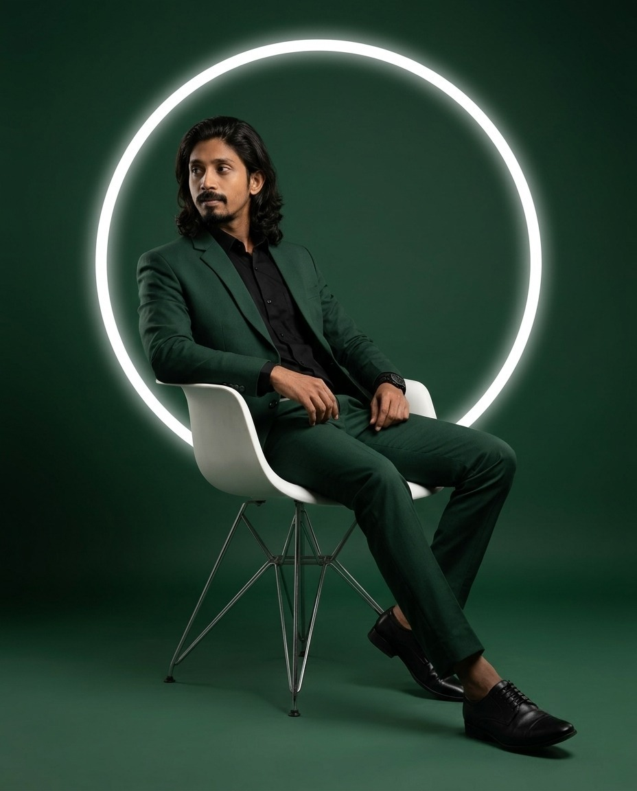
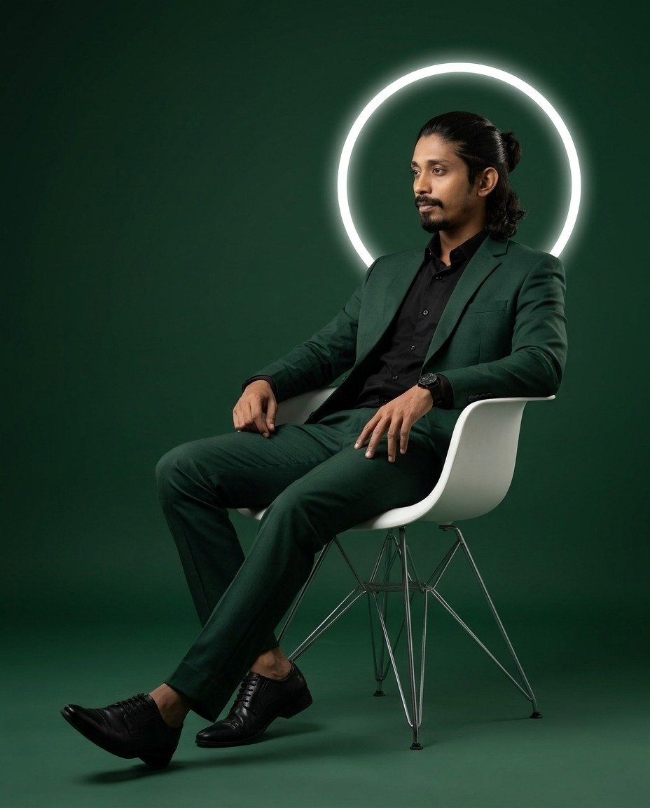

Data Entry & Documentation
Accurate data processing, record maintenance and document handling.
DIGITAL CV · PROFESSIONAL PROFILE
Disciplined, adaptable and detail-oriented, with hands-on experience in digital work, data processing, printing-machine operation and practical back-office workflows.

PROFILE

PROFESSIONAL SUMMARY
A practical and adaptable professional with 18+ years of experience across data entry, digital work, printing operations, documentation and team support.
Comfortable working with structured tasks, digital files, printing workflows and day-to-day operational responsibilities, with a strong willingness to learn new tools and skills.
CORE STRENGTHS
SKILLS & CAPABILITIES
A clear view of practical strengths, software knowledge and machine experience.
Accurate data processing, record maintenance and document handling.
Digital printing workflows, file processing and practical machine operation.
Administrative tasks, records, workflow support and operational routines.
Dependable support with a disciplined approach to learning new skills.
PROFESSIONAL EXPERIENCE
Professional history presented clearly, with the strongest recent digital-print and operations experience given visual priority.
ACADEMIC QUALIFICATION
P.S.E.B
61%P.S.E.B
58%EXTRA SKILLS
HOBBIES & INTERESTS
PORTFOLIO
Your portfolio is intentionally separate, image-led and editable, so you can keep adding digital art, handmade art and practical design/print work without rebuilding the CV.
CONTACT